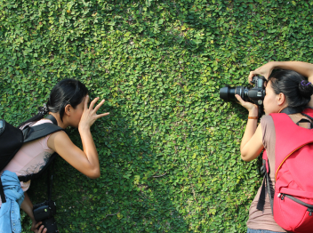
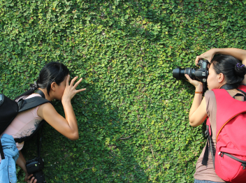

Beleza Natural

Pôr do sol nas montanhas
Explore a beleza da natureza com este incrível pôr do sol nas montanhas.
Ver mais fotos
Explore a beleza da natureza com este incrível pôr do sol nas montanhas.
Ver mais fotos
Descubra as cores e texturas da Ásia através dos olhos do nosso fotógrafo.
Ver mais fotos 



Veja nossas fotos urbanas favoritas capturadas ao redor do mundo.
Ver mais fotosDescubra mais sobre nosso trabalho e nossa paixão por capturar momentos únicos e inspiradores.
Veja mais